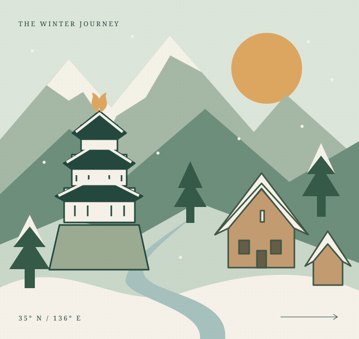

去程 / 01.26 TUESTARLUX · JX838
14:55TPE 桃園第一航廈 · 台灣時間
18:30NGO 中部第一航廈 · 日本時間
筆記託運額度：23 kg × 1 件
WINTER IN CENTRAL JAPAN
2027 / 01.26 — 02.01
從名古屋的街角，到白川鄉的合掌屋。
把七天的風景、美食與小小期待，收進一本旅帖。

七日旅程整合版 · 2027/1/26（二）–2/1（一）。已整合 Notion 筆記與地圖；航班以各地當地時間顯示，1/31 部分安排待確認。
資料說明 ↗THE DEPARTURE / FLIGHTS & TRANSFERS
時間依 Notion 筆記整理，出發前核對機票
台灣 UTC+8 · 日本 UTC+9
筆記託運額度：23 kg × 1 件
筆記託運額度：23 kg × 2 件
行李待核對：原筆記兩程皆寫「手提 7 kg × 2 件」，尚未確認是否符合所購票種；手提與託運額度均請以電子機票及星宇行李規定為準。
| 日期 | 時間 | 地點／安排 | 狀態與提醒 |
|---|---|---|---|
| 01.26 | 10:15 / 10:30 | 土城學府路 / 土城金城路送機 | 台灣接送待訂 |
| 01.26 | 11:00 暫定 | 桃園機場集合 | 時間待討論 |
| 01.26 | 18:30 抵達後 | 中部 T1 → 京阪名古屋 | 日本接機已訂，車號待補 |
| 01.29 | 08:30 | 京阪名古屋 → 白川鄉 → 高山 | 包車 330あ521 · 已訂 |
| 01.31 | 10:00 | 飛驒結之湯 → 犬山 → 名古屋 | 包車 330あ521 · 出發地依接送表 |
| 02.01 | 14:50 / 15:00 | 京阪名古屋集合 / 出發前往機場 | 日本送機已訂，車號待補 |
車號為原筆記資料，出發前再次確認。1/31 鐘乳石洞是否保留，請與司機和同行者確認後再排入。
CHAPTER 01 / THE ITINERARY
Notion 時間與每日計畫，搭配地圖地點索引
點選景點旁的箭頭，即可開啟地圖。
把整趟旅程，攤開來看。
需要網路連線CHAPTER 02 / THE WISHLIST
來自地圖的蒐集區與購物清單
保留彈性，不必每一站都抵達。
CHAPTER 03 / BEFORE WE GO
住宿、行前準備與隨手筆記
住宿與已訂狀態依 Notion 筆記整理，入住時間、房型及早餐方案仍以訂房憑證為準。
行前建議，可勾選整理。
勾選紀錄與筆記僅保存在這個瀏覽器。
輸入後自動儲存
ARRIVAL / 入境資料
去程 JX838，回程 JX839。日本住宿可填：ホテル京阪 名古屋，〒460-0003 愛知県名古屋市中区錦3丁目2-1，電話 +81 52-954-0321。
開啟 Visit Japan Web ↗網卡、保險、護照與入境資料，出發前逐項確認。
GETTING AROUND / 市區移動
搭地鐵前先核對路線、月台與行車方向。名古屋市營巴士通常前門上車、後門下車並於上車付款；基幹 2 號系統為例外，依車站及車身指示。
市營巴士與 manaca 官方說明 ↗名鐵是鐵路系統，原筆記的名鐵路線圖不當作市營地鐵圖。
DEPARTURE / 退稅與離境
2026/11/1 起採退稅新制。中部機場提醒：抵達後先在稅關 KIOSK 辦理退稅確認，再託運裝有免稅品的行李，之後進行出境程序。
中部機場官方退稅流程 ↗保留購物紀錄，免稅品需能出示供查驗，當天依機場最新指引辦理。
官方目前公告天守閣閉館；安排參觀前再確認當日開放資訊。
名古屋城官方 FAQ ↗展望台接駁可能因積雪、能見度或道路狀況調整，出發當天再確認。
白川鄉即時交通資訊 ↗冬季路面可能結冰，準備保暖、防滑的鞋履，步行時留意腳下。
高山官方冬季旅行提醒 ↗ABOUT THIS JOURNAL
每日時間、用餐、包車、穿搭與待辦，依你貼上的 Notion「01行程相關」整理；地點與座標依 Google My Maps 整理。原圖 100 個標記中，3 個為圖例；其餘 97 筆地點紀錄完整保留（含重複住宿）。「已訂」僅表示原筆記已勾選，未另行查驗訂單。
已確認旅行年份為 2027，資料夾亦已更名。原筆記的最後一天「0102」修正為 02/01；1/31 出發地依接送表採高山飯店，與行程欄的白川鄉寫法一併註明。鐘乳石洞的刪除線意義待確認；小豬咖啡缺少明確店名，未擅自指定店家。
口袋清單中的「Kyoshi 創作郷土寿司本舗」原座標明顯偏離行程區域；「德川園」定位亦待核對，兩者使用店名搜尋。店家預約條件與原備註均須出發前確認。
整理日期：2026.11.18 · 官方提醒為查閱當下資訊，出發前請再次確認。